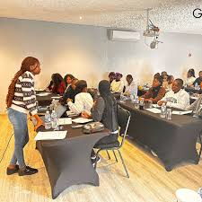
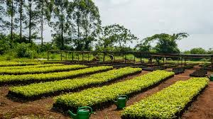
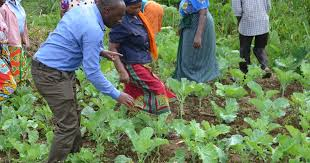
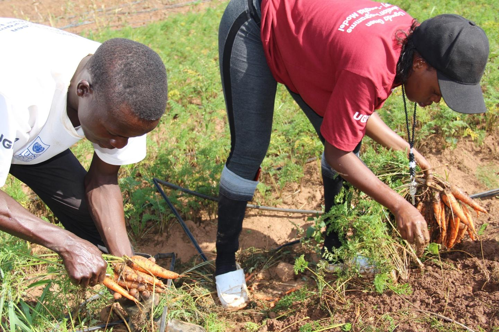

Mentorship Series
Near-peer mentoring and leadership sessions connecting youth with experienced mentors and local employers.
Cohort-based programs combining skills training, mentorship and community action that create pathways to sustainable livelihoods.
We run cohort-based, hands-on programs focused on employability, community impact and environmental stewardship. Below are highlights — for full syllabi, sign-up info and partner guides click the program's "Learn More" link.

Near-peer mentoring and leadership sessions connecting youth with experienced mentors and local employers.

Hands-on digital skills for girls: basic coding, device literacy, and pathways to internships.

Community-driven tree-planting campaigns plus nursery training and survival monitoring.

Farmer field schools teaching regenerative techniques to improve yields and soil health.
Storytelling workshops—filmmaking, audio and photography—to amplify youth voices.
High-tech cohort with hands-on labs, mentorship and demo days. This program focuses on employable digital skills for young women and safe online practices.
Project-based learning: web projects, simple apps and collaborative builds.
Pairings with women in tech; soft-skill coaching and interview prep.
Internship placements and demo days to connect with partners.


Community-driven programs that teach nursery techniques, regenerative agriculture and climate-smart practices.
Seedling propagation and care best-practices.
Hands-on demonstration plots and peer learning.
Survival monitoring and community stewardship plans.
Structured stages designed to build leadership, practical skills and community impact through guided cohorts and local projects.
Core workshops on leadership, communication and goal-setting.
Hands-on technical and vocational training aligned to local market needs.
Local projects, mentorship capstone and community showcases.